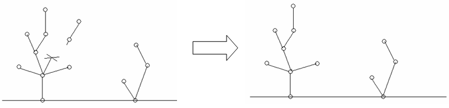
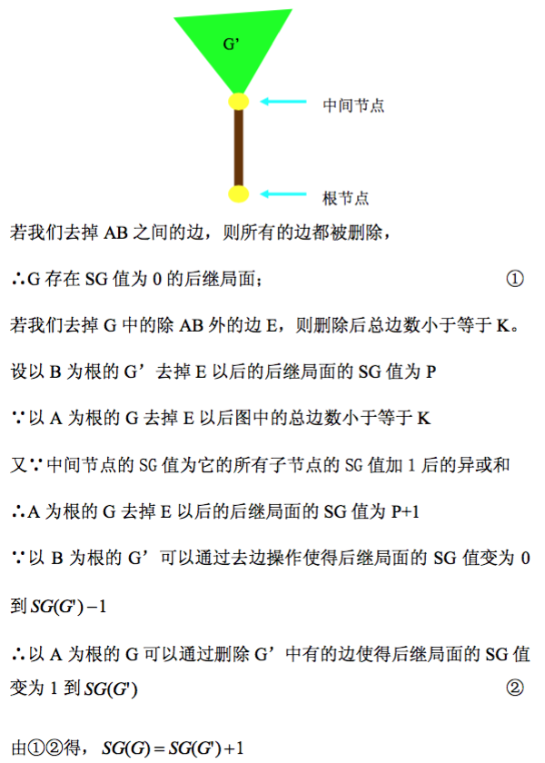

注：由于这两道题都是 Green Hackenbush (绿色博弈) 的题，下面讲解的是对一般有根图的 Green Hackenbush 问题的求解。而那两题的输入中，一题保证是树，一题保证是仙人掌森林，都可以套用下面一般算法求解。故代码也没有给出具体题目的代码。
现在来介绍 Green Hackenbush 问题。
有一张无向连通图，允许有自环和重边，其中 $1$ 号节点为根。有两个玩家轮流操作，每次可以选择图中的一条边并删去它。
每一次操作结束后，检查图中所有的连通块 (注意到图可能会被删得不连通)，并删掉除了 $1$ 号点所在的连通块之外的所有连通块。(即删除不与 $1$ 号点连通的所有点)。
如果轮到某个玩家操作时，只剩下节点 $1$ 了 (即没有边可删)，则该玩家输掉游戏。容易证明，Green Hackenbush 是一个 ICG (公平组合游戏)。
给定一个状态，求先手必胜还是后手必胜，并求出该状态的 SG 值 (由于是 ICG，故 SG 值是良定义的)。
这里给出 [soj366]绿色博弈 的输入格式，具体问题可以看 OJ 上的输入格式。
第一行包含两个非负整数 $n, m$ ($1 \leq n \leq 5 \times 10^5; 0 \leq m \leq 1.5 \times 10^6$)，表示无向图的点数和边数。
接下来 $m$ 行，每行两个正整数 $u, v$ ($1 \leq u, v \leq n$)，描述无向图中的一条边。
这里给出 [soj366]绿色博弈 的输出格式，具体问题可以看 OJ 上的输出格式。
输出一行一个整数，表示该状态的 SG 值。
我们使用像柯西方程一样的 "层层推进" 法来解决该问题。
考虑这个删连通块的过程。如果 $G$ 是一棵树，则这个删边过程可以等价于删子树过程。
先考虑最简单的情况：链。
设 $G$ 是一个 $n + 1$ 阶链 $P_{n+1}$，即 $G$ 有 $n$ 条边，且 $1$ 为链的一端。
则删除链上的一条边，就相当于删除一端的若干点，且这一端是固定的 (就是 $1$ 号点的另一端)。
因此，这个游戏可以看作是一个最简单的取石子游戏 (只有一堆)，因此 $P_{n+1}$ 的 SG 值为 $n$。
接下来考虑稍稍复杂的情况：树。
默认这里的树以 $1$ 为根。
根据打表 + 猜想，可以得到这样一个结论：
(Colon principle) 一棵树的 SG 值等于所有以 "$1$ 的子节点" 为根的子树的 SG 值加 $1$ 后的异或和。
对树的阶数使用归纳法。当 $\left| T \right| \leq 2$ 时结论显然。
考虑一般的 $K$ 阶树，分为两种情况：
$d(1) = 1$，即根节点的度数为 $1$。
由于这个证(wo)明(bi)比(jiao)较(lan)好就直接拉图片了……(source: https://wenku.baidu.com/view/25540742a8956bec0975e3a8.html)
$d(1) > 1$，即根节点度数大于 $1$。
这个时候，我们把根节点 $1$ 分裂成 $d(1)$ 个节点，变成 $d(1)$ 个 Green Hackenbush 游戏，每次可以任选一个 Green Hackenbush 游戏进行删边，直到所有的 Green Hackenbush 游戏都结束。
容易证明，此时原游戏与新的 $d(1)$ 个 Green Hackenbush 游戏的和是等价的。
而新的 Green Hackenbush 游戏中，根节点的度数均为 $1$，因此 SG 值等于子树 SG 值加 $1$，而新的 $d(1)$ 个 Green Hackenbush 游戏是互相独立的，因此由 Sprague-Grundy 定理，新的 SG 值就等于所有这样的子树 SG 值加 $1$ 后的异或和。
因此在这里我们就解决了树的部分，已经可以 AC [hdu3094]A tree game 了。
然后我们来分析最复杂的情况：一般图。
在分析一般图之前，先来分析仙人掌图。
和树一样的，仙人掌也有一个结论：
(Fusion principle) 对于图中一个长为 $k$ 的环，我们可以将它缩为一个点 $C$。然后所有与 "环中的点" 相连的边都连向点 $C$，如果 $k$ 为奇数，新建一个孤立点 $i$ 与 $C$ 相连。这样得到的新图和原图具有相同的 SG 值。
这个结论的证明非常复杂，这里略去，有兴趣的同学可以参考这方面的论文。
于是我们对仙人掌 dfs (或 tarjan) 一下，得到所有环的大小然后构建新图，然后就像树一样做即可。因此现在我们解决了仙人掌的问题，可以 AC [poj3710]Christmas Game了。
有了仙人掌的铺垫，最后转到一般图的过程就不难了。
要指出的是，Fusion principle 不仅对仙人掌成立，对一般图都是成立的。因此我们可以得到这个定理的一个推论：
(Fusion principle') 对一个一般的无向连通图，考虑它的一个边双连通分量，我们将其缩为一个点 $B$。然后所有与这个边双相连的边 (即桥边) 都指向点 $B$，如果这个边双中有奇数条边，则新建一个孤立点 $i$ 与 $B$ 相连。这样得到的新图和原图具有相同的 SG 值。
它的证明比较容易，只需要利用 Fusion principle 即可，具体证明就留给读者了。
这样来说，实现也不难，只需利用 Tarjan 算法进行边双连通分量缩点即可，缩点后就得到了一棵树，然后套用树的算法就完成了所有的 Green Hackenbush 问题。
当然，Green Hackenbush 还可以是图不连通的情况，此时我们需要对每个连通分量指定一个根 (通常题目会给出)，然后就可以把它看作是多个独立的 Green Hackenbush 游戏的和，只需要对每个 Green Hackenbush 游戏分别求解，然后使用 Sprague-Grundy 定理进行合并即可。
总时间复杂度 $O \left( \left| V \right| + \left| E \right| \right)$。
这里只给出 [soj366]绿色博弈 的模板，具体情况要视题目的输入输出格式而定。
#include <bits/stdc++.h>
#define ad(x) (((x - 1) ^ 1) + 1)
#define ID isdigit(c = *next++)
struct Istream {
int size; char *next, buf[20030731 * 3 / 2];
Istream (FILE *f = stdin) {fread(buf, 1, sizeof buf, f); next = buf;}
Istream & operator >> (int &x) {
int c; x = 0;
for (; !ID; ) if (!~c) return *this;
for (x = c & 15; ID; x = x * 10 + (c & 15));
return *this;
}
} cin;
const int N = 510000, M = 2040000 * 2;
int n, V, E, Es = 0;
inline void down(int &x, const int y) {x > y ? x = y : 0;}
namespace Green_Hackenbush {
int to[M], first[N], Tfirst[N], next[M];
int cnt = 0, id[N], low[N];
int stc = 0, stack[N], top[N], w[N];
bool bridge[M];
inline void addedge(int u, int v, int *fst) {
to[++Es] = v; next[Es] = fst[u]; fst[u] = Es;
to[++Es] = u; next[Es] = fst[v]; fst[v] = Es;
}
void dfs(int x, int px = 0) {
int i, y; id[x] = low[x] = ++cnt; stack[stc++] = x;
for (i = first[x]; i; i = next[i])
if (!id[y = to[i]]) {
dfs(y, i); down(low[x], low[y]);
if (id[x] < low[y]) bridge[ad(i)] = bridge[i] = true;
} else if (px - 1 ^ i - 1 ^ 1)
down(low[x], id[y]);
if (id[x] == low[x])
for (y = 0; y != x; )
y = stack[--stc], top[y] = x;
}
int dfs2(int x, int px = 0) {
int i, y, ret = 0;
for (i = Tfirst[x]; i; i = next[i])
if ((y = to[i]) != px)
ret ^= dfs2(y, x) + 1;
return ret ^ w[x];
}
int main() {
int i, u, v;
cin >> V >> E;
for (i = 0; i < E; ++i) cin >> u >> v, addedge(u, v, first);
dfs(1);
for (i = 1; i <= E * 2; i += 2) {
u = top[to[i]], v = top[to[i + 1]];
u == v ? w[u] ^= 1 : (addedge(u, v, Tfirst), 0);
}
return dfs2(top[1]);
}
}
int main() {
printf("%d\n", Green_Hackenbush::main());
return 0;
}
坑1：具体实现时，可以把边双内部的点缩成自环，然后最后进行树的 dfs 时统计自环数量的一半是奇数还是偶数来决定是否 $+ 1$。